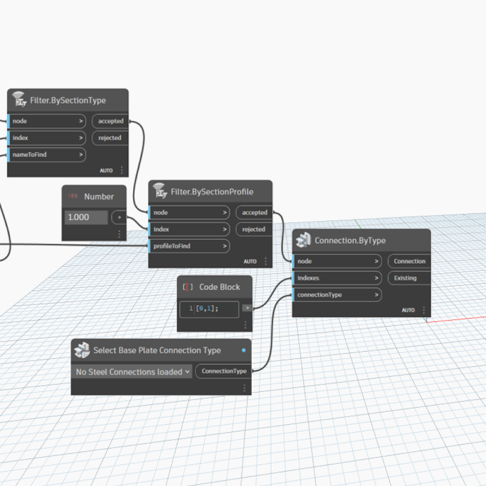
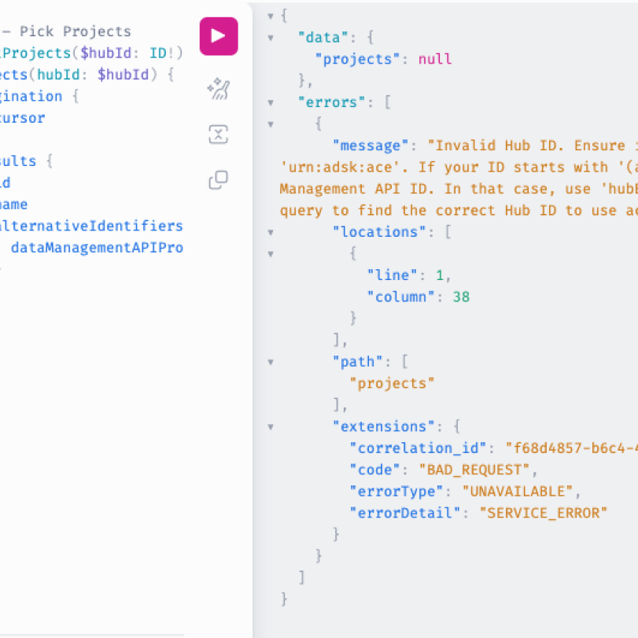
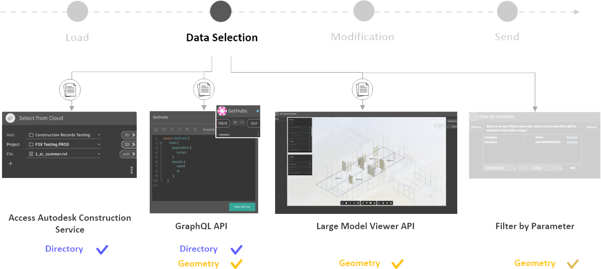

AUTODESK
Data Selection Experience
Streamlining workflows and improving user experience by designing scalable solutions for cloud-based data selection.
Role
Strategist
UX Designer
Prototyper
Tools
Figma
C#, Javascript
OAuth
GraphQL
Timeline
May - Aug, 2023
Status: on hold
context
challenge
solution
research
design
decision
Context
Dynamo in Migration from a Desktop Tool to Support Autodesk Cloud
Dynamo is an open-source visual programming tool within Autodesk’s AEC software suite. Originally supporting desktop-based 3D modeling tools like Revit, Dynamo is now transitioning to a cloud-integrated service. This shift to the cloud intends to unlock new possibilities, such as batch data selection and an intuitive 3D-oriented user experience.
Dynamo’s Stakeholders
Dynamo’s stakeholders include strategic components within Autodesk and its users — both end users and open-source developers.
Challenge
Inefficient Data Selection in a Cloud-Connected Environment
The primary challenge was managing large datasets and multi-data selections in Dynamo’s new cloud environment, leading to inefficiencies and disrupted workflows. Instead of relying on other primary products for data importing, Dynamo requires a dedicated channel to communicate information to the cloud to streamline the data selection and maintain its core strengths in automation and parametric design.
Desktop-based Dyanmo
Dynamo relies on a core product to select geometries as data input.
Cloud-based Dynamo
Direct data selection in Dynamo would enhance cloud workflows and scales its automation capabilities.
Solution
Creating Dynamo Nodes for Cloud Data Selection
To overcome these hurdles, I spearheaded the development of new Dynamo Nodes. These nodes focused on scalability, intuitive user experience, and efficient querying, enabling users to manage large datasets and automate processes seamlessly in a cloud-connected environment.
Scalability
Enabling batch data selection across multiple files and 3D geometry selection.
Intuitive User Experience
Providing a user-friendly interface with familiar visuals and logic, enabling intuitive navigation.
Efficient Querying
Balancing data accuracy with user-centric operability, facilitating the manipulation of large datasets.
+
+
Motivation
Door Fire-Rating Case Study:
Demonstrating Dynamo’s Scalability Power
This case study highlights Dynamo’s scalability, particularly when connected to the cloud.
Traditionally, architects must manually compare door schedules in Autodesk Revit with regulatory data
in Excel, a slow and error-prone process. Dynamo’s data input function simplifies this by directly
linking Excel data and automating the checking process, saving time and increasing accuracy.
For fire-rating inspectors who need to check door ratings across multiple buildings, the process can
be repetitive. Dynamo’s batch processing, combined with cloud connectivity, enables inspectors to
efficiently check door fire ratings for multiple buildings simultaneously, significantly enhancing
productivity.
Select a single file from cloud
Select a folder/multiple files from cloud
Research
Explore and Amplify Dynamo’s Strengths
— Parametric Design and Batch Automation
Our in-depth user research revealed key insights about Dynamo’s unique strengths in parametric design and batch automation. Interviews with users and internal stakeholders highlighted the need for better data integration with Autodesk cloud ecosystem.
Approach — Interview and Analysis
I recruited and conducted interviews with a diverse group of Dynamo users across various industries, including architectural design firms, construction companies, and civil planning teams. Through this process, I gathered 86 qualitative user data points from five 45-minute interviews and gained insights from five internal stakeholders across Revit, Civil3D, Data Exchange, Autodesk Research, and Dynamo.
Recruit
Interview
Qualitative Analysis
Quantitative analysis
Users — Dynamo Excels in Parametric Design
The interviews explored interviewees’ current use of Dynamo, specific workflows, and their takeaways with Dynamo's unique value. We identified that Dynamo’s strong integration with other Autodesk products is a significant advantage, which aligns with our goal to establish direct communication with the Autodesk cloud. Four out of five participants highlighted Dynamo’s ecosystem and data integration, while three out of five emphasized its parametric design capabilities.
Internal Stakeholders — Dynamo Leads in Scalability with Batch Processing
From conversations with other Autodesk teams, I learned how the Revit team designed their cloud integration experience, the research team has completed a web-based Large Language Model, and the Data Exchange team values Dynamo’s unique ability to batch workflows on objects, even across multiple files.
Design
Node Design for Geometry and Directory Selection
Using the research insights, we developed design guidance and requirements for new Dynamo Nodes. They facilitated geometry and directory selection, leveraging Dynamo’s strengths in parametric design and batch automation. The design process focused on creating a user-friendly and scalable solution.
Transforming Use Cases with Cloud Integration
Refined Workflow with Cloud Integration — With Dynamo’s data selection now directly connected to the cloud, I revised the use cases identified by interviewees and collaborated with them to enhance the workflow, incorporating a preview of Dynamo integrated into the cloud system.
Narrowing Down Design Options
Dropdown Menu Node
GraphQL Node
Large Model Viewer
Decision
Aligning Technical and Business Considerations with User Needs — Large Model Viewer
After evaluating various design options, we chose the Large Model Viewer for its ability to provide an intuitive 3D geometric interface. This decision aligned with user needs, technical feasibility, and business goals.
For Dynamo users in the AEC industry, a 3D geometric viewer is the most effective tool for visualizing and interacting with information.
A 3D geometric viewer offers a cost-efficient solution for Dynamo users in the AEC industry, ensuring effective information delivery with minimal development expenses.
Large Model Viewer, being a web-based product familiar to many users, lowers onboarding costs and enhances user comfort, supporting the shift to a fully web-based ecosystem.
Implementation
In collaboration with the engineering team, we streamlined the authentication flow to reduce user friction, requiring authentication only when essential. I evaluated the existing geometry selection functions in the Large Model Viewer and presented preferred toolbars and controls, such as 3D navigation and geometry category filters. Additionally, based on Dynamo users’ habits, I suggested implementing data filters based on properties like room tags.
Impact
Despite completing the design process and initial prototyping, the project is currently on hold due to team reorganization and strategic shifts. I followed up with the initial interviewees to gather their opinions on the Large Model Viewer node and its application in their original use cases. 80% of participants expressed strong interest in its potential, though they highlighted certain details that require further investigation and improvement. The groundwork laid provides a strong foundation for future development, paving the way for Dynamo's full migration to a cloud-based service.
Thoughts
Collaboration & Community
This project underscored the importance of cross-functional collaboration in achieving successful outcomes. By working closely with various Autodesk teams, we delivered a solution that leveraged existing knowledge, emphasized familiar interfaces, and enhanced the user experience. I’m grateful for the engagement with users, which provided valuable insights to strengthen Dynamo’s value in parametric design and scalability in batch automation. The cloud data selection design process embraced community involvement and stakeholder feedback, reinforcing the critical role of user-centered design in driving innovation and adoption.